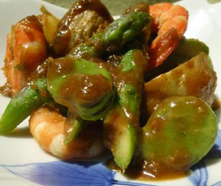

アスパラガスと新ジャガの
フキ味噌グリル
フキ味噌グリル
- 調理時間：30 分
- （一人当たり）
- カロリー：219kcal
- たんぱく質：17.2g
- 脂質：2.1g
- 塩分：0.8g


＜４人分＞
- アスパラガス
- ３本
- そらまめ
- １２～１６粒
- 新ジャガ
- ３５０～４００ｇ
- エビ
- １２尾
Ａ
- ・フキノトウ
- １０個
- ・味噌
- ２０ｇ
- ・砂糖
- ３０ｇ
- ・酒
- 大さじ１
- ・水
- 大さじ１
- ・ゴマ油
- 少々


- (フキ味噌をつくる。)Aの材料
① フキノトウを水でサッと洗い、荒めのみじん切りにザクザク切り、油で炒める。
② しんなりしたら調味料を加え弱中火で炒め煮し、水分がある程度飛ぶまで、練り上げます。 - エビは塩ゆでして殻をむく。
- アスパラガスは斜め切りにする。そらまめは鞘から取り出す。新ジャガは皮のまま半分に切り、水にさらす。
- ③の材料をそれぞれ下ゆでする。
- エビと④の材料をフキ味噌で和え、180℃のオーブンで5～10分加熱する。
アスパラガスと新ジャガのフキ味噌グリル
アスパラガスは地中海沿岸地方の原産で、ヨーロッパでは古くから栽培され、食されていました。日本では桜の開花が春の風物詩とされますが、ヨーロッパでは桜前線ならぬ「ホワイトアスパラガス前線」があるそうです。
日本では春から夏にかけて収穫期を迎えますが、穂先を空に向け、ぐんぐん真っ直ぐ伸びていく姿には感動すら覚えます。また、ほろ苦く、香り高いフキノトウもこの時期に楽しめる大切な食材です。厳しい冬に耐え、重い雪から小さな顔を出す強い生命力。芽吹きの春は休眠していた地球が動きだす季節です。食材から元気をいただき、最高のパフォーマンスでバリバリ働きましょう。